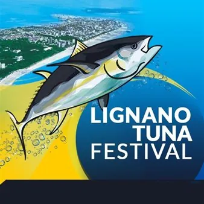

da ven 25 set a dom 4 ott
Lignano Tuna Festival 2026
Torna il classico appuntamento annuale con il Lignano Tuna Festival, organizzato da Lignano Tuna Club. Non mancherà un'area ristoro, dove verranno serviti esclusivamente i prodotti del territorio e la possibilità per i visitatori di provare prodotti da pesca, anche al…
 Indicazioni
Indicazioni
- Costi e prenotazioni
- Costo non indicato · Prenotazione non indicata
- Programma
- Programma da verificare. Apri la fonte ufficiale per orari e possibili aggiornamenti.
- In caso di maltempo
- Nessuna indicazione specifica pubblicata.
- Note
- Acquisito automaticamente dalla fonte.
L’EVENTO
Descrizione completa
Non mancherà un'area ristoro nelle giornate di venerdì, sabato e domenica dove verranno serviti esclusivamente i prodotti del territorio e la possibilità per i visitatori di provare prodotti da pesca, anche al simulatore. Clou della manifestazione sarà la tradizionale
, che da un decennio il club organizza ogni anno. Durante l’intera domenica verranno serviti succulenti piatti a base di tonno e pesce azzurro.
Il Lignano Tuna Club organizza dal 25 al 27 settembre 2026 e dal 2 al 4 ottobre 2026 il Lignano Tuna Festival. Non mancherà un'area ristoro nelle giornate di venerdì, sabato e domenica dove verranno serviti esclusivamente i prodotti del territorio e la possibilità per i visitatori di provare prodotti da pesca, anche al simulatore. Clou della manifestazione sarà la tradizionale Festa del Tonno Rosso , che da un decennio il club organizza ogni anno. Durante l’intera domenica verranno serviti succulenti piatti a base di tonno e pesce azzurro. Programma • Venerdì 25 settembre ore 18.00 - Inaugurazione del Festival ore 18.30 - Apertura dello stand gastronomico ore 23.00 - Chiusura Cucine • Sabato 26 settembre ore 11.00 - Apertura dello stand gastronomico ore 23.00 - Chiusura Cucine • Domenica 27 settembre ore 11.00 - Apertura dello stand gastronomico ore 15.00 - Gara di pesca simulata per i ragazzi ore 23.00 - Chiusura Cucine • Venerdì 02 ottobre ore 11.00 - Apertura dello stand gastronomico ore 23.00 - Chiusura Cucine • Sabato 03 ottobre ore 11.00 - Apertura dello stand gastronomico ore 23.00 - Chiusura Cucine • Domenica 04 ottobre ore 11.00 - Apertura dello stand gastronomico ore 18:00 - Festa del Tonno ore 23.00 - Chiusura Festival
Il Lignano Tuna Club organizza dal 25 al 27 settembre 2026 e dal 2 al 4 ottobre 2026 il Lignano Tuna Festival. Non mancherà un'area ristoro nelle giornate di venerdì, sabato e domenica dove verranno serviti esclusivamente i prodotti del territorio e la possibilità per i visitatori di provare prodotti da pesca, anche al simulatore. Clou della manifestazione sarà la tradizionale Festa del Tonno Rosso , che da un decennio il club organizza ogni anno. Durante l’intera domenica verranno serviti succulenti piatti a base di tonno e pesce azzurro.
Programma • Venerdì 25 settembre ore 18.00 - Inaugurazione del Festival ore 18.30 - Apertura dello stand gastronomico ore 23.00 - Chiusura Cucine • Sabato 26 settembre ore 11.00 - Apertura dello stand gastronomico ore 23.00 - Chiusura Cucine • Domenica 27 settembre ore 11.00 - Apertura dello stand gastronomico ore 15.00 - Gara di pesca simulata per i ragazzi ore 23.00 - Chiusura Cucine • Venerdì 02 ottobre ore 11.00 - Apertura dello stand gastronomico ore 23.00 - Chiusura Cucine • Sabato 03 ottobre ore 11.00 - Apertura dello stand gastronomico ore 23.00 - Chiusura Cucine • Domenica 04 ottobre ore 11.00 - Apertura dello stand gastronomico ore 18:00 - Festa del Tonno ore 23.00 - Chiusura Festival
IL PROGRAMMA
Programma e orari
Appuntamenti raccolti dalle fonti elencate. Dove manca un orario, non è ancora disponibile in questa scheda.
Programma pubblicato
- ore 18.00 - Inaugurazione del Festival
- ore 18.30 - Apertura dello stand gastronomico
- ore 23.00 - Chiusura Cucine
- ore 11.00 - Apertura dello stand gastronomico
- ore 15.00 - Gara di pesca simulata per i ragazzi
- ore 18:00 - Festa del Tonno
- ore 23.00 - Chiusura Festival
INFORMAZIONI UTILI
Prima di partire
- Controllare la fonte prima di partire.
ORGANIZZAZIONE